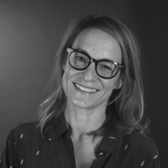

¡Hola! Soy Esther Ochando

Toda mi vida laboral la he dedicado al mundo de los recursos humanos, he visto como cambia una organización y como las personas también cambian y se adaptan a las nuevas formas de trabajo y de gestión, la vida es cambio constante y las personas buscamos el control en cosas que no podemos controlar. La comodidad es algo efímero que nos limita
ante la posibilidad de ver el mundo con ojos de aprendiz, donde cada día algo nuevo puede suceder y cada día es una nueva oportunidad en la que agradecer el simple hecho de existir. Con el afán de querer controlar lo que nos es imposible, surgen los miedos, que no más lejos de avisarnos de que en la adaptación es donde esta la supervivencia, nos dejamos paralizar por ellos cayendo en el desanimo, la apatía, la queja, el mirar para otro lado…. dejándonos arrastrar por la “comodidad” de no hacer nada para cambiarlo. En tiempos de crisis, es donde podemos comprobar qué personas y empresas, son resilientes a los cambios y quienes se quedan en el camino. En la complejidad del mundo laboral, encontramos empresas que con una visión del corto plazo y de la ganancia económica, pasan por alto el propósito de su existencia, el foco de su estrategia, que es al fin y al cabo lo que les permitirá ser viables y sostenibles en el tiempo.
Las personas podemos mostrar nuestra mejor versión, pero también la peor, y es ahí donde una organización liderada por personas debe de orientarse y analizar como conseguir la confianza de sus equipos, mejorar el sentimiento de pertenencia al grupo, y estar alineados y comprometidos con el proyecto, por que sí, son las personas las que consiguen objetivos y obtienen resultados, son las personas las que hacen posible que las cosas ocurran, son las personas las que te diferencian de tu competencia y es ahí poniendo el objetivo en su bienestar, podremos obtener la mejor versión de si mismas y de los equipos que representan tu identidad de marca.
Imagina que pudieras expandir el valor del bienestar en tu organización, donde tus colaboradores se sientan parte de tu negocio y contribuyan con todo su potencial a la consecución de los objetivos estratégicos que te propongas, creando una relación de confianza en la que puedas construir nuevas formas de evolucionar en tu negocio, de adaptarte a los tiempos cambiantes, y sí, es ahí, donde yo puedo ayudarte.
Quién soy
Soy Esther Ochando, Diplomada en Relaciones Laborales, Máster en Desarrollo Directivo, Inteligencia Emocional y Coaching por la EAE Business School, obteniendo la acreditación como Coach Ejecutiva por ICF. Certificada como Coach de Equipos por la Escuela Europea de Coaching.
Experiencia
Cuento con 20 años de experiencia en el área de personas, de los cuales los últimos 12 años como directiva de personas liderando y gestionando equipos de trabajo, que ha hecho realidad una cultura de bienestar, logrando la certificación en el Sistema de Excelencia en Empresa Saludable. Actualmente Responsable Corporativa de Proyectos People First en la empresa sanitaria líder en España.
Método
Mi experiencia y especialización, junto con mi vocación de servicio y orientación a las personas, me han impulsado a compartir el Método Ochando, la herramienta que te va a ayudar a implementar tu modelo de bienestar adaptado a la identidad de tu compañía.
MetodologíaMás sobre mi
En el año 2017 sentí que quería cambiar la forma de hacer las cosas, y después de más de 16 años trabajando en el área de personas y siendo parte del comité de dirección, tenía la responsabilidad de adaptarme a las nuevas tendencias en el desarrollo directivo de personas y reinventar la forma de gestionar los recursos humanos. Al cabo de 1 año termine el Master en Desarrollo Directivo, Inteligencia Emocional y coaching consiguiendo la acreditación de Coach Ejecutivo.
Desde ese momento, mi inspiración ha sido poder dedicarme a una profesión en el que la confianza en las personas sea el camino para crecer ya que en ellas esta la posibilidad de crear entornos de bienestar. En 2019 continúe con mi formación, consiguiendo el certificado de Coach de Equipos lo que aporta a mi capacitación las habilidades para acompañar a un equipo a alcanzar los objetivos que desean.
Y es en este año tan complicado que estamos viviendo, cuando decido dar un paso al frente y emprender con mi propio negocio cuya misión es lograr una cultura de bienestar empresarial para hacer realidad que las personas son el valor más importante de las organizaciones que deseen poner en practica políticas orientadas a incrementar el bienestar de sus empleados, por lo quiero compartir el método que me sirvió para conseguir la certificación de empresa saludable dentro de la compañía.
Los valores del bienestar, la valentía y la humanidad son los pilares que me ayudan a dar ejemplo y a conseguir implementar esa cultura de bienestar tan necesaria en las
organizaciones, porque serán las empresas más innovadoras las que lograran llegar más lejos.
Me encanta trabajar en equipo, aprender es una de mis prioridades, disfruto de mi vida en familia y el deporte es para mi una forma de vida, que junto con la fortaleza y la perseverancia hacen que este en constante evolución. Me encanta cuidarme y disfruto cuidando de los demás.